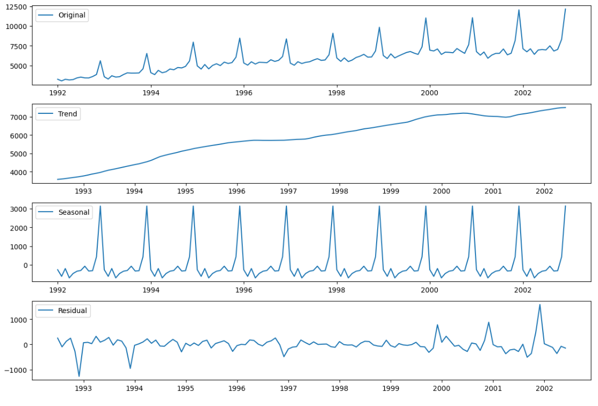
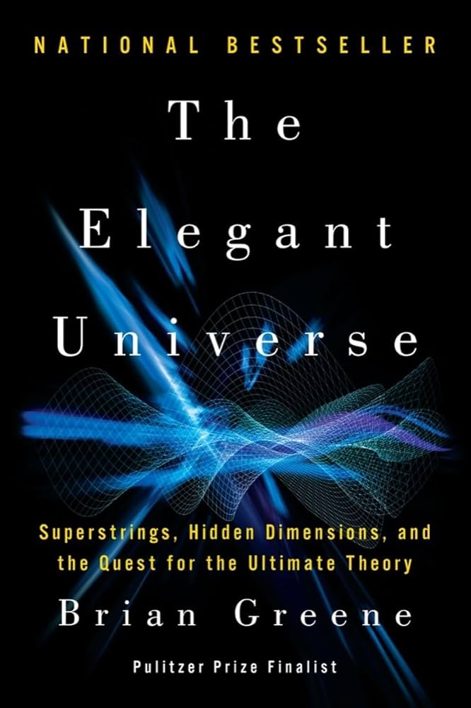
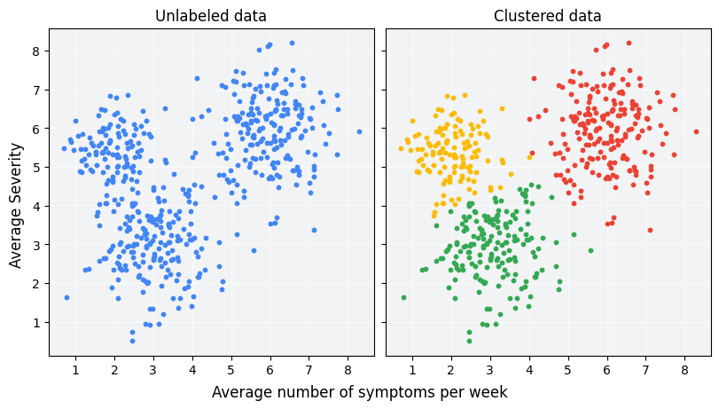

Information for Life
Welcome to Information for Life, where engaging insights meet practical applications. Explore topics inspired by my passions, academic pursuits, and everyday discoveries.
About Information for Life
Welcome to a blog dedicated to sharing practical and engaging insights from my passions and experiences. Discover tips, tools, and reflections to enrich your journey.
Who Am I? My name is Jonah, a double major in Data Science and Exercise Science, driven by curiosity and a desire to uncover meaningful patterns in life.
What Can You Expect Here? Insights on data science, health, personal growth, and practical advice to help you live a more informed and fulfilling life.
Science Blogs
Time Series Analysis
Explore the intricacies of time series analysis and its applications in forecasting and data trends. How do we effetively look at time series data?
The Elegant Universe
Dive into the fascinating insights of string theory, inspired by Brian Greene's "The Elegant Universe."
Clustering Techniques
A comprehensive guide to clustering techniques and their real-world applications in data science.
Your Daily Dose of Wisdom
Keeping Doors Open

We have so many opportunities in this world that pull for our attention. Is that actually hurting us? What is important?